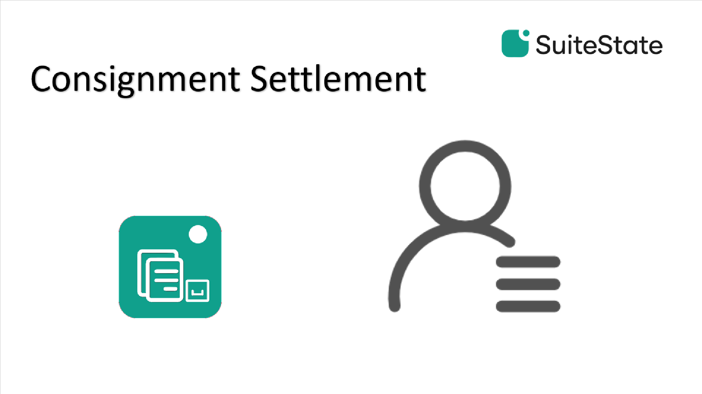
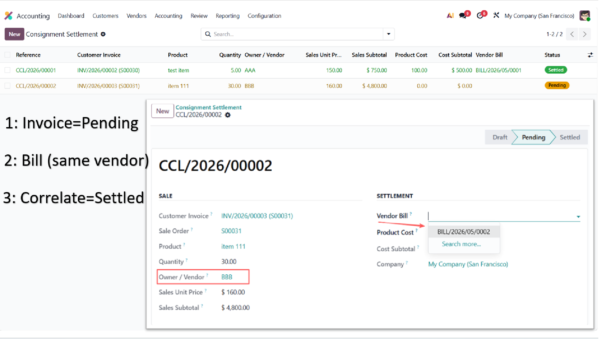

Odoo's native consignment flow handles inventory valuation correctly: vendor-owned stock contributes zero value at delivery, so a customer invoice's COGS reflects only the own-stock portion. The consigned cost is recognised separately when the vendor's settlement bill is posted.
What is missing in native is the matching surface between those two events. This module adds a per-line settlement ledger that tracks each consigned outbound on a customer invoice and allows accounting to match it to the corresponding vendor bill, with status tracked automatically.
No configuration required. No new accounts created. The module activates on installation and is silent for invoices that contain no consigned stock.

For every invoice line that ships consigned stock, one ledger row is created per (invoice line × consigning vendor) combination, recording the outbound quantity in the invoice line's UoM. A notebook tab on the customer invoice form lists the settlement rows. A “Consignment Pending” flag is set on the invoice.
Accounting opens the settlement ledger from Accounting → Customers → Consignment Settlement, filters by vendor, pending status, or date range, and assigns the Vendor Bill on each row. The unit cost auto-fills from the first matching product line on the bill and remains editable. Each settled row turns green; the invoice's pending flag clears once all rows are matched to a posted bill.
When a credit note is posted, the module creates proportional negative-quantity copies of the original invoice's ledger rows, anchored to the credit note. Each reverse row carries a link back to the originating row for traceability.
The module reuses native Accounting groups. No new group is added.
| Group | Access on settlement ledger |
|---|---|
Invoicing (account.group_account_invoice) |
Read |
Accountant (account.group_account_user) |
Read / Write / Create |
Adviser (account.group_account_manager) |
Read / Write / Create / Delete |
mail, stock_account,
sale_stock.suite_inventory_access for
cross-jumping from ledger rows to stock moves, but each
module is fully independent.
Released under the GNU Lesser General Public License v3
(LGPL-3.0-or-later). The full license text is included in the
LICENSE file shipped with the module.
Maintained by SuiteState. For questions, bug
reports, or feature requests, visit
suitestate.com or contact
hello@suitestate.com.